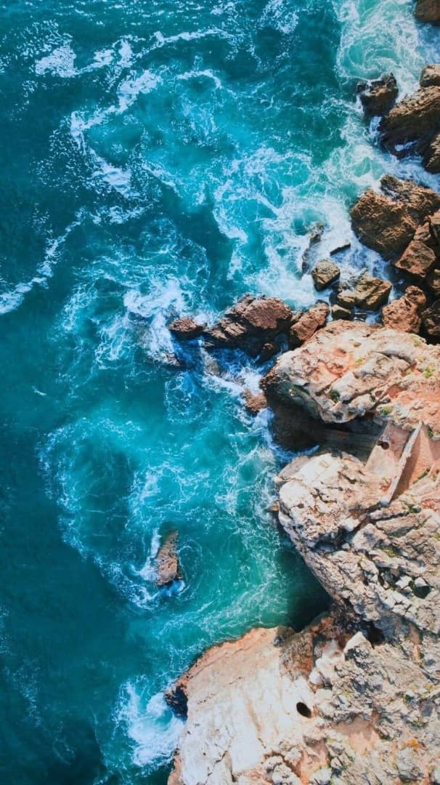

<!--
  Generated template for the HomePage page.

  See http://ionicframework.com/docs/components/#navigation for more info on
  Ionic pages and navigation.
-->
<ion-content>
    <div class="container">
        
        <div class="bottom-left">
            <button ion-button round color="yellow" (click)="gotoSignUp()">Sign Up</button>
            <button ion-button outline round color="yellow" (click)="gotoLogin()">Sign In</button>
        </div>
        <div class="top-left">PICLOOK</div>
        
      </div>
</ion-content>
